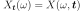
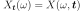
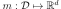
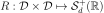
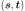
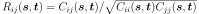
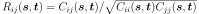
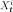
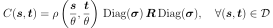

Covariance models¶
We consider  a multivariate
stochastic process of dimension
a multivariate
stochastic process of dimension  , where
, where  is an event,
is an event,  is a domain of
is a domain of  ,
,
 is a multivariate index and
is a multivariate index and
 .
.
We note  the random variable at
index
the random variable at
index  defined by
 and
a realization of the process
defined by
 and
a realization of the process
 , for a given defined by
, for a given defined by
 .
.
If the process is a second order process, we note:
-  its mean function, defined by
 ,
, - its covariance function, defined by ,
-  its
correlation function, defined for all ,
by
 such that for all
such that for all  ,
.
,
.
In a general way, the covariance models write:
where:
 is the scale parameter
is the scale parameter id the amplitude parameter
id the amplitude parameter- is the Cholesky factor of :
The correlation function may depend on additional specific parameters which are not made explicit here.
The global correlation is given by two separate correlations:
the spatial correlation between the components of
which is given by the correlation matrix
and the vector of marginal variances
, it links together the components of
the correlation between and
- In the general case, the correlation links each component  to all the components of and ;
- In some particular cases, the correlation is such that depends only on the component and that link does not depend on the component
. In that case, can be defined from the scalar function by . Then, the covariance model writes:

API: